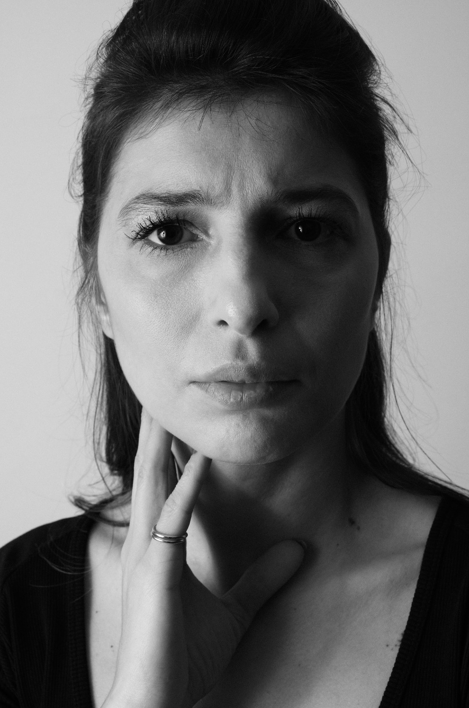

Meva KÜÇÜKAKYÜZ

Meva Küçükakyüz, Ankara Devlet Tiyatrosu sanatçısıdır. Anadolu Üniversitesi Devlet Konservatuvarı Oyunculuk Anasanat Dalı’ndan 2010 yılında mezun oldu ve aynı yıl Konya Devlet Tiyatrosu’nda göreve başladı. 2018’de Ankara Devlet Tiyatrosu’na tayin edildi; tiyatro çalışmalarını burada sürdürmektedir. Özel oyunlar ve Devlet Tiyatrosu yapımlarının yanı sıra dizi ve sinema çalışmalarında da yer aldı. Oyunculuk eğitimi sırasında farklı atölyelere katılan Küçükakyüz’ün ilgi alanları arasında müzik, şan ve dans eğitimleri de bulunuyor. Yan flüt çalıyor; tango ve çeşitli hareket disiplinleriyle de ilgileniyor. Biyografisinde yaşamı ve eğitimi, çalışmalarında sahne ve ekran yapımları, galeride ise portre fotoğrafları yer alıyor.